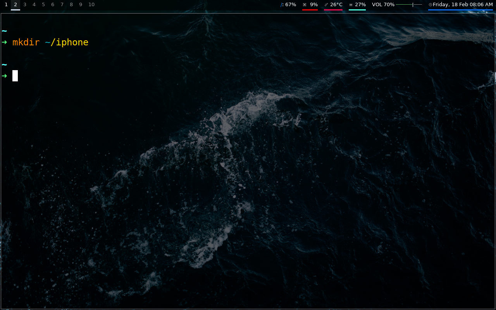
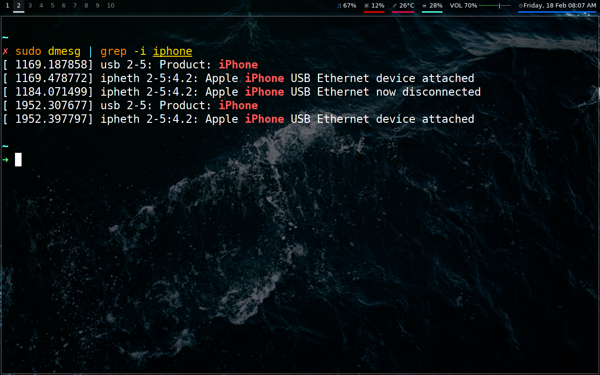
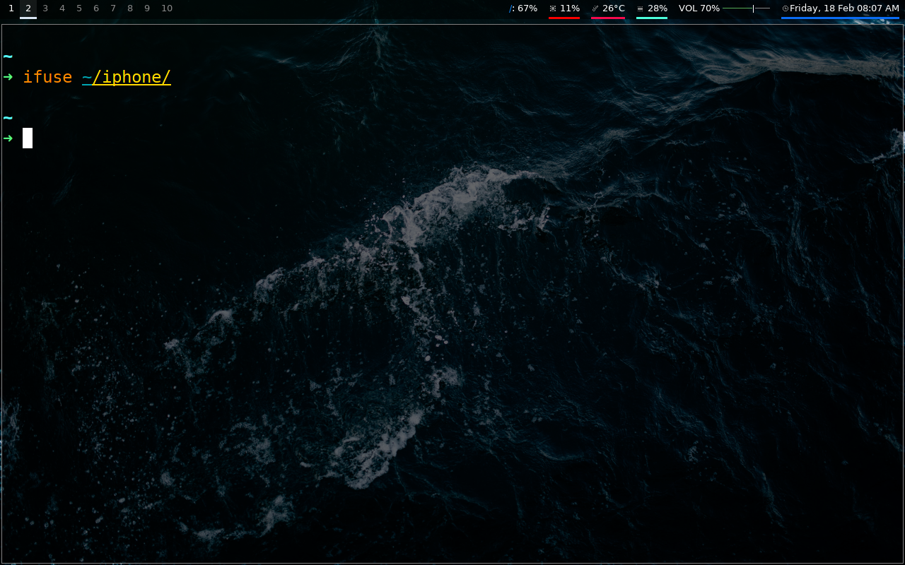
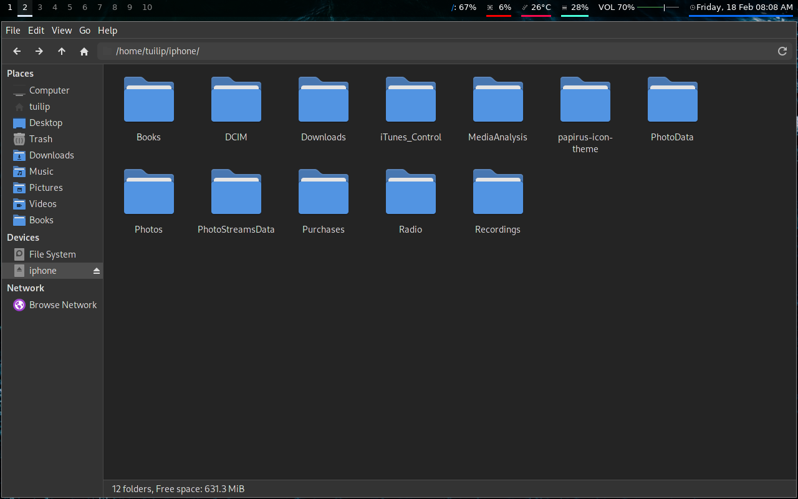

If we try to mount iPhone or iPad on distributions with DEs like Gnome or KDE, then it is very simple and easy to mount them. But, if you don't have DEs like these or you have a WM, you would have to manually mount the iPhone or iPad.
In this article, we will show you how to do exactly that!
1. Download the necessary packages:
- ifuse
- usbmuxd
- libplist
- libimobiledevice
2. Reboot
3. Now we'll make a folder where our iPhone's or iPad's filesystem will be mounted.
4. We'll now connect our iPhone or iPad with the system. To check if it's connected properly, we'll run the following command.
5. Finally, we'll mount the iPhone's or iPad's filesystem.
6. Now the device's filesystem is mounted.
